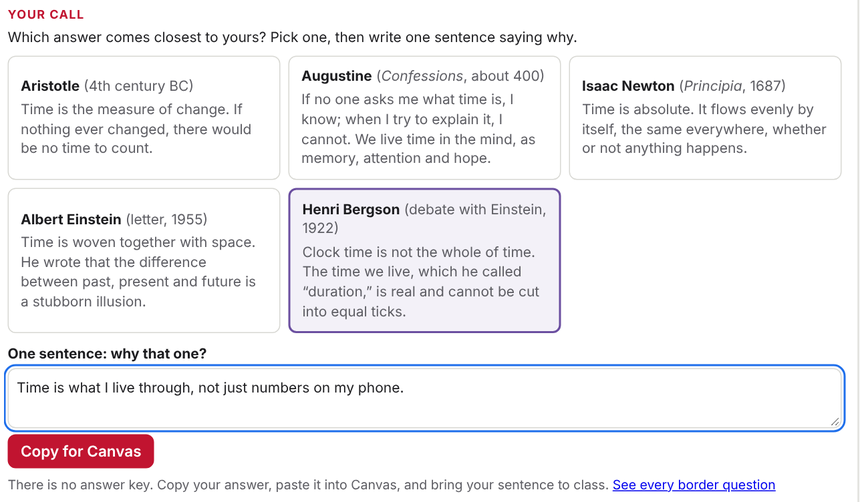

![RJ]()
Where science meets philosophy
Some Raider Labs tools end with a border question: the place where the science stops and philosophy and faith begin. Each card shows what the science found, what it has to assume, where it stops, what the Church teaches, voices from the Catholic tradition, and thinkers who answer the open question differently.
Students pick the thinker closest to their own view and write one sentence. There is no answer key: the goal is to see the border clearly and think on both sides of it. Every card is in the tool itself, below the simulation in Full lab and at the end of Learn it.
Copy your answers for Canvas
Every card ends with a Copy for Canvas button for that one answer. If your teacher asked for several, copy them all at once here. Your answers are saved only in this browser, on this computer.
- Answer the border card at the end of each tool you were assigned: pick a thinker and write one sentence.

- Come back to this page and press Copy all my answers.
- In Canvas, click the answer box and press Ctrl+V (Cmd+V on a Mac).
Teachers: make a Canvas Discussion or text-entry Assignment, paste a tool’s link from this page, and ask students to paste their answer. Each pasted answer shows the question, the thinker they picked, their sentence and the tool’s name.
RJ Ed Tech · Raider Labs · Where science meets philosophy